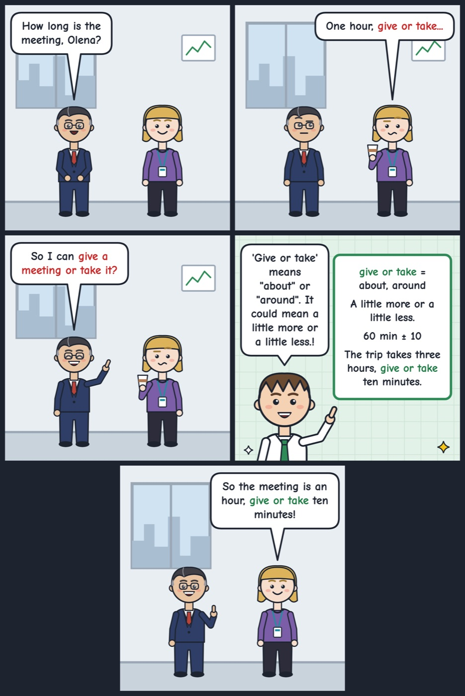

give or take
'Give or take' means about, with a small amount more or less.
The trip takes three hours, give or take ten minutes.
Use 'give or take' after a number to say it is not exact: 'twenty people, give or take.'

Your turn
How far is your home from your work, give or take?
How far is your home from your work, give or take?